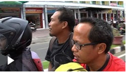
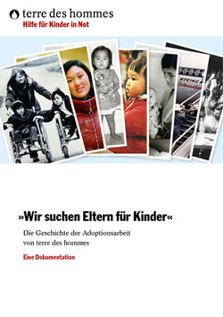
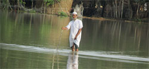
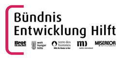

|
Sumatra: Neun Jahre nach dem Tsunami |
Am 26. Dezember 2004 starb jeder zweite Bewohner des kleinen Dorfes Suak Nie an der Westküste Sumatras in den Fluten des Tsunamis. Die Überlebenden verloren - im Wortsinne - den Boden unter den Füßen. 20.000 Euro sammelte Radio Bremen mit einer Spendenaktion und übergab diese Summe an terre des hommes. Mit lokalen Partnern unterstützte terre des hommes den Wiederaufbau. Der Beitrag beleuchtet wie es den Menschen heute geht, insbesondere den Kindern und Jugendlichen, die damals in den Fluten ihre Eltern verloren haben.
Zum Beitrag in der Mediathek von Radio Bremen |
Deutschland muss Regelungslücken bei Auslandsadoptionen schließen
20 Jahre Internationales Haager Adoptionsabkommen |
Das internationale Haager Adoptionsabkommen ist ein wichtiges Instrument im Kampf gegen fachlich fragwürdige und kriminelle Auswüchse des internationalen Adoptionswesens. Es gibt allerdings in Deutschland immer noch Fälle, bei denen die Adoption unter Umgehung des Haager Adoptionsabkommens durchgeführt wird. Diese Regelungslücken müssen endlich geschlossen werden. Die deutsche Gesetzgebung zu Auslandsadoptionen muss so harmonisiert werden, dass das Haager Adoptionsabkommen das allein gültige Regelungswerk ist. Außerdem muss sichergestellt werden, dass alle Staaten, die an internationalen Adoptionsvermittlungsverfahren beteiligt sind, dem Abkommen beitreten und die Standards uneingeschränkt umsetzen. Dies erklärte das internationale Kinderhilfswerk terre des hommes anlässlich des 20. Jahrestages der Verabschiedung des Abkommens am 29. Mai.
»Das Haager Adoptionsabkommen hat das Ziel, Auslandsadoptionen bestmöglich im Sinne der Kinder zu regeln und illegale Praktiken wie den internationalen Adoptionskinderhandel zu unterbinden. Dieses wichtige Ziel kann aber nur erreicht werden, wenn die Schlupflöcher geschlossen werden, mit denen Bestimmungen des Abkommens umgangen werden können«, erklärte Danuta Sacher, Vorstandsvorsitzende von terre des hommes. »Auch Deutschland ist hier gefordert, denn nach wie vor wird bei uns gegen das Haager Adoptionsabkommen verstoßen. Es muss sichergestellt werden, dass keine Auslandsadoptionen unter Umgehung staatlich anerkannter Vermittlungsstellen durchgeführt werden. Adoptionen ohne fachliche Begleitung und Prüfung des familiären Umfeldes des Kindes wie auch der adoptierenden Eltern widersprechen dem Kindeswohl diametral«, so Danuta Sacher.
terre des hommes hat zwischen 1967 und 1998 mehr als 2.800 Waisen und verlassene Kinder aus verschiedenen Ländern an Adoptiveltern in Deutschland vermittelt und sich für die Verabschiedung des Haager Adoptionsabkommens eingesetzt. »Wir wissen aus unserer langjährigen internationalen Programmarbeit um die Gefahren des Kinderhandels und die große Nachfrage nach schnellen Auslandsadoptionen insbesondere nach Katastrophen wie dem Erdbeben in Haiti 2010. Um Kinder vor Schleppern und Menschenhändlern zu schützen, die ihre Not ausnutzen, dürfen Auslandsadoptionen niemals privat und unter Umgehung der gesetzlichen Standards erfolgen«, sagte Danuta Sacher.
Das »Haager Übereinkommens über den Schutz von Kindern und die Zusammenarbeit auf dem Gebiet der internationalen Adoption« wurde am 29. Mai 1993 beschlossen. Es regelt die Zusammenarbeit von Staaten bei Auslandsadoptionen. Dabei gilt das Subsidiaritätsprinzip, d.h. vorrangig muss im Herkunftsstaat des Kindes geklärt werden, ob dort eine angemessene Versorgung, Pflege und Unterbringung möglich ist. Erst als letzter Schritt kommt die internationale Adoption in Betracht. Gleichzeitig verpflichtet sich der Aufnahmestaat, die Adoptionsbewerber durch Fachstellen auf ihre Eignung zu überprüfen. Deutschland hat es im November 2001 ratifiziert, gesetzliche Gültigkeit erhielt es zum 1. März 2002. Mittlerweile sind 90 Staaten dem Haager Adoptionsabkommen beigetreten.
Weitere Informationen:
- NEU — terre des hommes-Broschüre »Wir suchen Eltern für Kinder« – Die Geschichte der Adoptionsarbeit bei terre des hommes (PDF-Dokument)
- Pressemitteilung International Federation terre des hommes: The Hague Convention (englisch) (PDF-Dokument)
- Pressemitteilung International Federation terre des hommes: Convention de La Haye (französisch) (PDF-Dokument)
|
Wirbelsturm in Bangladesch: Ein Augenzeugenbericht |
Bericht von terre des hommes Schweiz, www.tdh.ch
|  |
Foto: terre des hommes Kinderhilfe Lausanne |
Sonntag, 12. Mai 2013. Der nationale Wetterdienst kündigt die Ankunft von Mahasen an, dem ersten Wirbelsturm der Saison, der auf direktem Weg auf die Küstenregion im Süden des Landes zukommt. Langsam, aber entschlossen bilden sich um sein Auge in der Mitte Wolken, die Windgeschwindigkeit nimmt zu und bald stehen alle in Bangladesch arbeitenden internationalen NGO in Alarmbereitschaft, organisieren Sitzungen und nutzen Systeme für gemeinsame Evaluationen, die Koordination und Spendenaufrufe. Das Eintreten des Sturms wird für Mittwoch, 15. Mai oder Donnerstag, 16. Mai vorausgesagt. Wetten kommen auf: Wo wird der Sturm hereinbrechen, wird er grössere Schäden verursache, welches ist der beste Standort für die Sicherstellung der dringendsten Bedürfnisse. Zwei Tage vergehen, Mahasen nähert sich und die Windrichtung, die voraussichtlich leicht nach Osten drehen wird, bedroht Chittagong, die zweitgrösste Stadt Bangladeschs. Die Wetterprognosen widersprechen sich, es ist auch die Rede davon, dass der Zyklon geradeaus weiterziehen und damit weiter westlich auf die Bezirke Borguna oder Patuakhali treffen könnte. Seine Ankunft wird jetzt für Donnerstagabend oder Freitagmorgen erwartet.
Die Tdh-Teams bereiten sich vor
Terre des hommes , seit 2007 in Borguna aktiv, ist besorgt und trifft Vorbereitungen. Der informierte Staff steht für eine allfällige Hilfsaktion bereit, Nothilfeteams reisen Mittwoch früh mit Hilfsgütern ab: Mittel für die Trinkwasseraufbereitung, Medikamente, Seife usw. Donnerstagnachmittag gehen 49’000 Freiwillige der Regierung und des Roten Halbmondes durch die Dörfer, um die Menschen über Mikrofon vor dem herannahenden Wirbelsturm zu warnen und zur Flucht zu bewegen. Die Familien machen schnell Pakete bereit, vergraben ihre Küchengeräte, binden Kühe und Ziegen von ihren Leinen los und laufen in eine der 56 Zyklon-Schutzanlagen der Region, ohne zu wissen, in welchem Zustand sie ihre Häuser bei der Rückkehr antreffen werden.
Mahasen ist jetzt nur noch hundert Kilometer entfernt, an der gesamten Küste herrscht am Donnerstagvormittag Alarmstufe 7. Die Häfen des Landes sind seit drei Tagen geschlossen. Das Chittagong-Szenario bestätigt sich. Um 10 Uhr treffen in Dhaka NGO bei strömendem Regen zusammen. Eine Flutwelle von zwei bis drei Meter Höhe wird angekündigt. Die Telefone laufen heiss, die Meinungen gehen auseinander. In Patuakhali sollen 26 Inseln überflutet worden sein. Seit 12 Stunden ist im Süden so viel Regen gefallen wie noch selten. Strasse, Wege und Innenhöfe stehen unter Wasser. Das Büro von Tdh ist überschwemmt, Strom- und Telefonleitungen sind unterbrochen. Während die Führungskräfte ins Büro laufen, nachdem sie von den Koordinationsinstanzen die entsprechenden Anweisungen erhalten haben, bricht der Wirbelsturm über Patuakhali herein. Chittagong bleibt verschont. Doch die gesamte Region weiter westlich rundum das Gangesdelta bekommt Mahasens Zorn zu spüren: 20-stündige Regenfälle überfluten Felder, Häuser und Gärten, zerstören Latrinen, Netze, Obstbäume, Wasserstellen, Hühner und Enten der ärmsten Menschen der Welt.
Ein seit langem gebeuteltes Land
Bangladesch ist ein Land, das regelmässig von Klimakatastrophen getroffen wird. Der Golf von Bengalen ist eine Brutstätte für Wirbelstürme. Ihre Wolkengebilde sind jeweils mindestens hundert Kilometer breit und können einen Durchmesser von bis zu tausend Kilometer erreichen. Sie bilden sich über dem warmen Meer (Mindesttemperatur: 26,5 Grad) und drehen sich dann mit einer Geschwindigkeit von bis zu 300 km/h um die eigene Achse.
Bis zum Zyklon Sidr im Jahr 2007 schockierte die Anzahl Todesopfer und zerstörter Häuser jeweils die Menschen und prägte sie. In der allgemeinen Vorstellung ist ein Zyklon tödlich, zerstört mit seiner Windstärke und wirkt gewaltsam auf Umwelt und Menschen ein. Seit einigen Jahren kümmern sich Wissenschaft und NGO verstärkt um die Katastrophenvorsorge. Weltweit wurden zahlreiche Projekte zur Verminderung von Katastrophenrisiken eingeführt. Technische Massnahmen, das Bewusstsein der Regierungen und die Vorbereitung der Bevölkerungen ermöglichten zweifellos, die Risiken in Zusammenhang mit Mahasen zu verringern. Zudem war die Besonderheit von Mahasen, dass er für wenig Wind, aber äusserst heftige Regenfälle sorgte. Auf die Strassen gefallene Bäume werden nun schnell zerkleinert, um im nächsten Winter als Brennholz zu dienen. Die Windstärke von 100 km/h hat die meisten Dächer unbeschadet gelassen, vor allem aber alle Menschenleben. Es gibt nur wenige Verletzte. Die Aufmerksamkeit internationaler und nationaler Medien lässt nach, zu guter Letzt war es nur ein kleiner Wirbelsturm.
Schwierige sanitäre Bedingungen
Mahasen hat sich über Bangladesch abgeschwächt. Wind und Regen beruhigen sich, die Menschen verlassen die Zyklon-Schutzanlagen und kehren in ihre Dörfer zurück, um die Schäden festzustellen. Im Allgemeinen sind sie erleichtert, ihre Häuser stehen noch, wenn auch etwas mitgenommen. Die Latrinen sind zerstört, doch das ist nicht die Hauptsorge der Menschen. Das Wasser um und in den Häusern macht ihnen zu schaffen. Die Verluste sind relativ gering, aber nicht unbedeutend. Schulbücher, Tiere, Gemüsegärten, Obstbäume, Kochstellen im Freien… Leben und Häuser sind gerettet, doch wie steht es um die Gesundheit?
Während sich der Mensch beruhigt, wirkt die Natur trügerisch im Stillen. Die Felder stehen einen Meter unter Wasser, bald werden Sonnenblumen-, Linsen- und Weizenfelder verrotten und einen fauligen Geruch verströmen. Die Ernte ist verloren. Die Felder müssen trocknen, bevor möglichst bald Reis angepflanzt werden kann. In der Zwischenzeit machen sich die Fischer die Not zur Tugend und legen ihre Netze in den zu grossen Seen gewordenen Feldern aus. Aus zerstörten Latrinen strömen Fäkalien, dringen in Wasserstellen ein und verseuchen sie. Da die Menschen keine Möglichkeit haben, das Wasser zu reinigen, brauchen sie es weiterhin zum Waschen, Kochen und Trinken und nehmen so Bakterien auf.
Die Teams von Tdh rechnen mit einem Anstieg wasserbedingter Krankheiten in den kommenden Wochen. Der plötzliche Arbeitsverlust wegen der überfluteten Felder, die zur Stunde nicht bestellt werden können, wird kurzfristig zu einem Geldmangel führen und die Ernährung der Familien und Kinder erschweren. Die Felder werden dieses Jahr nicht die geplanten Ernten ergeben. Probleme in Zusammenhang mit der Nahrungsmittelsicherheit und der Mangelernährung von Kindern könnten rapide ansteigen und zu einer Krisensituation führen. Oder auch nicht. Die Zahlen werden es zeigen. Ob dieser Anstieg bedeutend oder nur gering ausfällt, wird zum Grossteil von der Widerstandsfähigkeit dieses Volkes abhängen, das sich immer besser an den Umgang mit Klimakatastrophen gewöhnt hat, aber auch von der Arbeit der NGO und Regierung, um die Schäden möglichst gering zu halten.
Marie du Pontavice, 24 mai 2013.
Stellvertretender Delegationsleiter, Bangladesch (Tdh)
Zum Original-Artikel |
Kinderrechts-Team Nojoud bei den Gaggenauer Maitagen |
Vom 11. Bis 13. Mai 2013 war das Kinderrechtsteam „Nojoud“ mit einem Infostand zum Thema „ökologische Kinderrechte“ auf dem diesjährigen Maimarkt vertreten.
Der Stand befand sich unmittelbar im Eingangsbereich zur Jahnhalle und auch im Foyer der Halle, wo der traditionelle Öko-/Umweltmarkt stattfand.
Die Resonanz vonseiten der Besucher war mäßig, obwohl viele Menschen am tdh-Stand vorbei strömten. Die Mitglieder des Kinderrechtsteams waren sehr enttäuscht, auch wenn einige interessierte Gespräche geführt werden konnten. Auch das Bemalen von Stoffbannern mit Motiven zu „ökologische Kinderrechte“ hat wenig Resonanz gefunden.
Die Konsequenz: Eine nochmalige Teilnahme an den Gaggenauer Maitagen wird ausgeschlossen, zumal sich der organisatorische Aufwand, einen Standaufzubauen und zu besetzen, als gewaltig erwiesen hat.
Großen Dank gilt dem engagierten Team „Nojoud“, aber auch den tdh-Mitarbeitern Barbara Wachsmuth für den Standdienst, Alfred Uhing und Heinz Wolf für den Auf- und Abbau.
Weitere Informationen:
|
Humanitäre Hilfe verstärken, politische Blockaden überwinden
Syrien-Appell von Bündnis Entwicklung Hilft |
Angesichts der prekären humanitären Situation in Syrien und der wachsenden Schwierigkeiten der Nothelfer, die bedürftigen Menschen zu erreichen und zu versorgen, fordert das Bündnis Entwicklung Hilft:
1. Waffenruhe erreichen
Eine Waffenruhe und ein deutlich verbesserter Zugang für die Hilfsorganisationen in allen Landesteilen Syriens sind wichtige Voraussetzungen für die dringend erforderliche, umfangreiche Ausweitung der Hilfsmaßnahmen. Deutschland und die Europäische Union müssen sich deshalb dafür einsetzen, dass die politische Blockade im Syrien-Konflikt überwunden wird, um eine politische Lösung des mehr als zwei Jahre andauernden Konfliktes zu erreichen. Dafür muss massiver politischer Druck auf die syrische Regierung und die Opposition ausgeübt werden. Aber auch alle Einflussmächte, die in den Bürgerkrieg verwickelt sind – etwa durch logistische Unterstützung oder direkte Waffenlieferungen – müssen für das Erreichen einer politischen Lösung in die Pflicht genommen werden.
2. Alle Waffenlieferungen unterbinden
Die internationale Staatengemeinschaft ist aufgefordert, jegliche Waffenlieferungen in die Konfliktregion einzustellen. Keine der Konfliktparteien darf hiervon ausgenommen sein. Waffenlieferungen werden den Konflikt anheizen, doch genau dies muss unbedingt vermieden werden.
3. Die UN mit Nachdruck unterstützen
Die Hilfe für die Flüchtlinge, auch für die Binnenflüchtlinge, muss massiv ausgeweitet werden. Hierzu sind weitere Flüchtlingslager unter dem Mandat der UN und in der Durchführungsverantwortung der UN erforderlich. Die an dieser Hilfe beteiligten UN-Organisationen sollten die erforderlichen Finanzmittel umgehend von den UN-Mitgliedsstaaten erhalten.
4. Flüchtlingen umfassend helfen
In den Flüchtlingslagern in Syrien und in den Nachbarländern müssen die Menschen nicht nur Zugang zu Wasser, Essen und Hygiene erhalten, sondern auch zu sozialen Grunddiensten wie dem Unterricht für die Kinder. Die vielen dezentral, oftmals privat untergebrachten Vertriebenen brauchen ebenfalls Unterstützung, ebenso wie diejenigen, die die Flüchtlinge unter oft großen Belastungen beherbergen und unterstützen.
5. Die direkte Hilfe vor Ort anerkennen und stärken
Die Bereitschaft weiter Teile der syrischen Bevölkerung, zu helfen und sich zum Beispiel für ihre Nachbarn einzusetzen oder bei Hilfsmaßnahmen mitzuarbeiten, ist groß und ermutigend. Diese nachbarschaftliche Hilfe findet unsere größte Anerkennung und verdient hohe Aufmerksamkeit – auch hier in Deutschland. Die Hilfe der syrischen Bevölkerung untereinander kann allerdings dem Ausmaß der humanitären Bedürfnislage längst nicht mehr gerecht werden. Hilfe von außen durch die Vereinten Nationen und die Hilfsorganisationen sind für die Menschen inzwischen überlebenswichtig geworden.
6. Syrische Flüchtlinge aufnehmen
Die Bundesregierung ist aufgefordert, gemeinsam mit den Bundesländern dafür zu sorgen, dass mehr syrische Flüchtlinge in Deutschland aufgenommen werden können. Hierzu gehört auch eine großzügige Visaregelung für Angehörige von hier lebenden Syrern.
Syrien-Hilfe von Bündnis Entwicklung Hilft:
Die Bündnis-Mitgliedsorganisationen medico international, Misereor, terre des hommes und Welthungerhilfe sind in Syrien, an der türkisch-syrischen Grenze und in den Nachbarländern Jordanien, Libanon und Irak aktiv. Die Arbeitsbedingungen für die Mitarbeiter – ob international oder einheimisch – sind allerdings äußerst schwierig. Die Sicherheitslage ist äußerst angespannt, der Zugang zu den Bedürftigen sehr eingeschränkt, und auch die Vereinten Nationen können nur partiell helfen. Dies hat zur Folge, dass nur ein geringer Teil der Menschen, die dringend Hilfe benötigen, wirklich erreicht wird und die Hilfsorganisationen ihre Arbeit nicht ausweiten können. Trotz dieser schwierigen Bedingungen setzen die Mitgliedsorganisationen des Bündnisses ihre Arbeit fort. Sie unterstützen zumeist lokale Organisationen und Initiativen, die unter Lebensgefahr ihre Nothilfe-Arbeiten durchführen.
Brot für die Welt, Christoffel-Blindenmission, Kindernothilfe, medico international, Misereor, terre des hommes und Welthungerhilfe leisten als Bündnis Entwicklung Hilft akute und langfristige Hilfe bei Katastrophen und in Krisengebieten.
Weitere Informationen:
Ihre Spende - Stichwort: "Syrien"
Spendenkonto 51 51
Bank für Sozialwirtschaft
BLZ 370 205 00
Spendenkonto 120 790
Sparkasse Baden-Baden / Gaggenau
BLZ 662 500 30
Spendenkonto 102 748 00
VoBa Baden-Baden / Rastatt
BLZ 662 900 00 |
|
|
|
 Ansprechpartner Ansprechpartner
|
|
Wolfgang Deppisch
(Projektinfos)
Tel. 07222 / 32927
Heinz Wolf
(Sponsoring, Allgemeines)
Tel. 07225 / 75543
weitere Ansprechpartner
|
|
Erlöse
1992-2012
|
|

Jahr |
Euro |
1992 |
70.000 |
1993 |
75.600 |
1994 |
83.883 |
1995 |
69.617 |
1996 |
51.412 |
1997 |
61.749 |
1998 |
60.333 |
1999 |
68.742 |
2000 |
85.492 |
2001 |
106.375 |
2002 |
78.937 |
2003 |
84.027 |
2004 |
76.662 |
2005 |
149.941 |
2006 |
84.497 |
2007 |
105.958 |
2008 |
104.053 |
2009 |
100.833 |
2010 |
107.254 |
2011 |
103.600 |
| 2012 |
158.250 |
| 2013 |
163.420 |
1977-2013 |
mehr als 2,7 Mio. € |
|
Detailansicht der Erlöszahlen |
|
|


;)